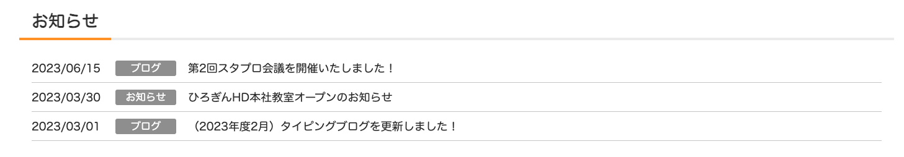
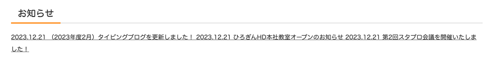
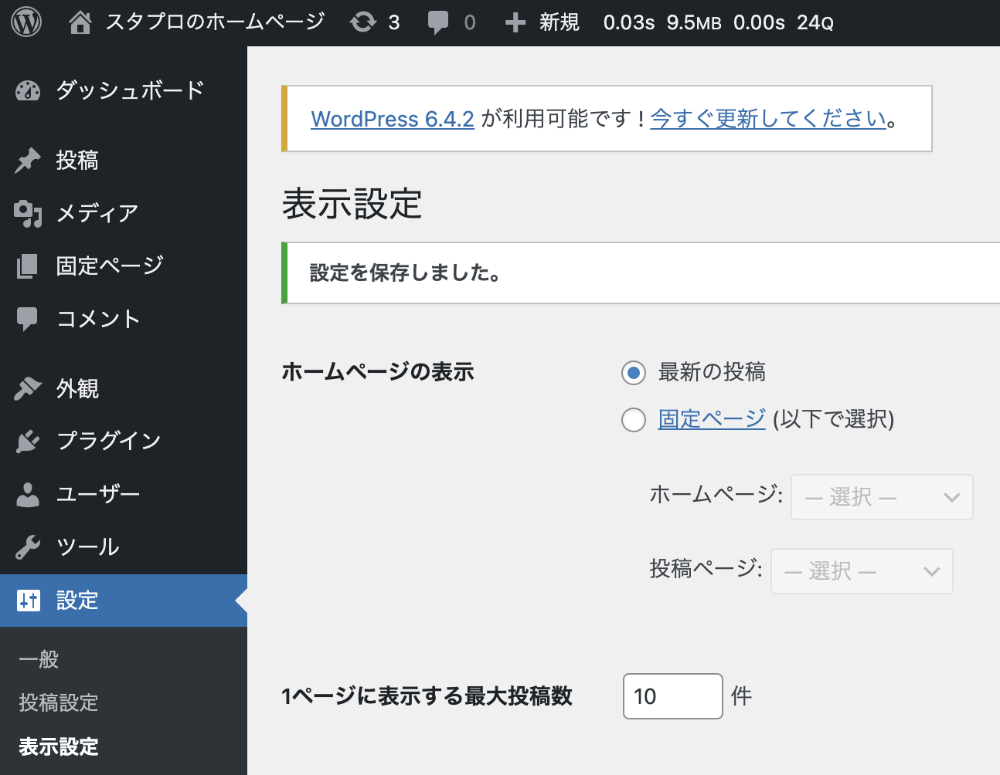
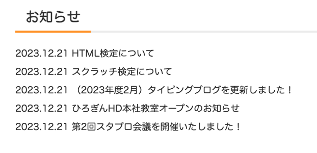

php
ワードプレスでは、お知らせやブログなどの投稿内容をデータベースから引っ張ってきて、それをサイトに反映させることができます。
簡単に言うと、プログラムを書かなくてもサイトに情報を表示させることが出来ます。これがワードプレスの大きな特徴の一つです。
お知らせやブログは管理画面から作成することができ、プログラミング未経験の人でも簡単に作成することができるので
これが出来るようになるとサイトの更新やメンテナンスがとても楽になります！
今回表示させたいお知らせは下の画像の箇所になるので、このお知らせをベタ書き（直接コードで書くこと）せず
ワードプレスの投稿画面から内容を引っ張ってくるようにしましょう！

①まずは、ワードプレスの管理画面からお知らせの内容を作成していきます。
ここに書いた内容をサイトに表示させることになります。
最初からある「Hello World」の記事は使わないので、ゴミ箱に入れておきましょう。
②作成した内容をデータベースから引っ張ってくるためのコードを記述します。
index.phpに書かれている画像の箇所を削除し、
削除した箇所に、新たに次のようなコードを記述しましょう。
<?php if (have_posts()): ?>
<?php while (have_posts()):the_post(); ?>
<a href="<?php the_permalink(); ?>" class="post">
<?php echo get_the_date('Y.m.d'); ?>
<?php the_title(); ?>
</a>
<?php endwhile; ?>
<?php endif; ?>
サイトがこのように変化していれば、上手くデータベースから投稿の内容が引っ張ってこれています！

それでは、先ほどのコードを意味を一つずつ解説していきます。
<?php if (have_posts()): ?>
「もし投稿があれば〜」という意味で、ワードプレスの関数になります。
<?php while (have_posts()):the_post(); ?>
「投稿がある間中ずっと、その投稿の内容を取得してきてセットする」という意味で、ワードプレスの関数になります。
つまり、この2行のコードで「もし投稿があったら、投稿の数だけ投稿を取得してきて処理をする」という意味になります。
<a href="<?php the_permalink(); ?>" class="post">
「投稿のリンクを取得する」という意味になります。
classはcssの設定で必要なため「post」というclassを付けておきましょう。
<?php echo get_the_date('Y.m.d'); ?>
「日付を取得する」という関数になります。
カッコの中に引数を取ることができ、（Y.m.d）と入れることで、投稿を作成した年・月・日の情報を取得することが出来ます。
取得した情報を表示させるという意味の「echo」がないと表示されないので、忘れないように記述しましょう。
<?php the_title(); ?>
タイトルを取得する」という関数になります。
これで投稿のタイトルを取得することが出来ます。
<?php endwhile; ?>
while文を閉じるためのコードです。
<?php endif; ?>
if文を閉じるためのコードです。
マインクラフトのコースでも学習したと思いますが、if文やwhile文は必ず終了タグを書く必要があります。
また、設定画面の「ホームページの表示」が最新の投稿になっていないと、トップページを読み込んだ時に上手く投稿の情報を
引っ張ってくることが出来ないので注意しましょう。
その下にある「1ページに表示する最大投稿数」というのは、「サイトに何件表示をするか」を決める箇所になります。
現在は10件になっているので、最大10件まで投稿を表示させることが出来ます。

「投稿の内容をデータベースから引っ張ってくる」というコードは必ずと言っていいほど使用するのでしっかり理解をしていきましょう！
.post{
display: block;
text-decoration: none;
}
aタグはデフォルトでインライン要素なので、横並びに表示されます。
それを縦並びにするために、aタグをブロック要素にする必要があるので「display:block ;」とします。
下線も消したいので、「text-decoration: none;」を入れます。
これで綺麗に整いました！
「投稿の内容をデータベースから引っ張ってくる」というコードは何回も出てくるので、たくさん使って覚えましょう！
投稿をもう2つ増やし、以下のように全部で5つのお知らせをサイトに表示させてみよう！
投稿の中身は「テキスト」という文言を入れてください。
